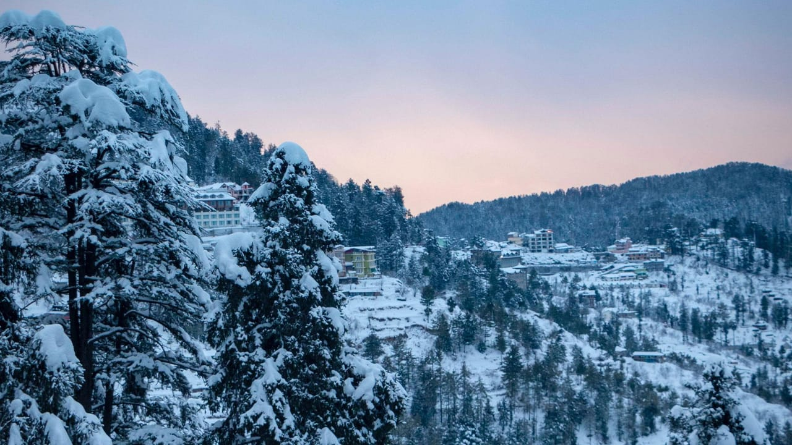

About Shimla
Shimla also known as Simla, (the official name until 1972) is the capital and the largest city of the Northern Indian state of Himachal Pradesh. In 1864, Shimla was declared as the summer capital of British India. After independence, the city became the capital of Punjab and was later made the capital city of Himachal Pradesh. It is the principal commercial, cultural and educational centre of the state. It was the capital city in exile of British Burma (present-day Myanmar) from 1942 to 1945.Shimla is home to a number of buildings that are styled in the Tudorbethan and neo-Gothic architectures dating from the colonial era, as well as multiple temples and churches. The colonial architecture and churches, the temples, and the natural environment of the city attracts tourists. Major city centre's attractions include the Shri Hanuman Jakhu (Statue), Jakhu Temple, Viceregal Lodge, Christ Church, Mall Road, The Ridge and Annadale. The city centre's northernmost point is Jakhoo and the southernmost location is Annadale, and the easternmost point is Sanjauli and western point is Chotta Shimla. The Kalka–Shimla Railway line built by the British, a UNESCO World Heritage Site, is also a major tourist attraction. Owing to its steep terrain, Shimla hosts the mountain biking race MTB Himalaya, which started in 2005 and is regarded as the biggest event of its kind in South Asia. Shimla also has the largest natural ice skating rink in South Asia. Apart from being a tourism centre, the city is also an educational hub with a number of colleges and research institution.Shimla is a very decent place to go for a short trip, the total cost for 4 days and 3 nights could be 3000-7000.